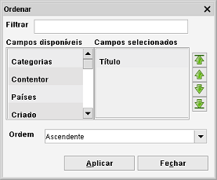
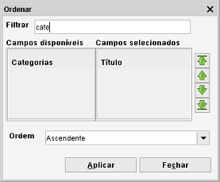

Ordenar itens
Clique com o botão direito na vista de item > selecione Ordenar
Os itens podem ser ordenados clicando com o botão direito na vista e selecionando ordenar. Os itens na vista são ordenados
pelos campos mostrados no painel à direita. Os campos disponíveis (por que se podem ordenar) são mostrados
à esquerda. Pode mover os campos de um lado para o outro com duplo clique.

Pode ordenar por múltiplos campos em simultâneo. O Data Crow ordena pela ordem dos campos na lista. Para alterar a ordem
use as setas verdes no lado direito da janela.
Encontrar o campo
Caso não consiga encontrar o campo que procura, pode usar a barra de filtragem. Na parte de cima da janela está um campo de texto.
Introduza aqui o nome do campo que procura. No exemplo abaixo, escrevi "cate" para encontrar o campo "Categorias".

Ordem
Aqui pode alterar a ordem dos campos (inverter a ordem para decrescente):
| - |
Ascendente |
| - |
Descendente |